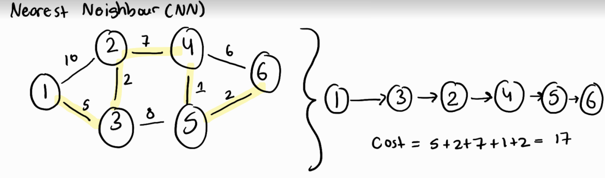
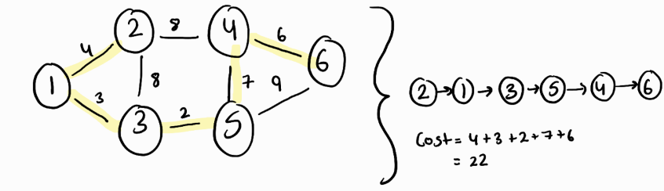
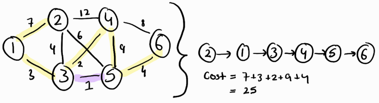

Solving the Traveling Salesman Problem: A short introduction
Approximating an optimal least cost path between a set of nodes
The Travelling Salesman Problem (TSP) is simple in nature. Take a set of points in space (called nodes), these nodes may or may not be connected by a line segment (called an arc). The collection of nodes and arcs creates a "graph" (seen above). The TSP aims to find the shortest path from a set begininning node to a set destination node by traversing available arcs in a graph.
However producing a solution to this problem is much more difficult. This is because the solution space (the number of available paths) grows exponentially as the number of nodes increase. It becomes so difficult, in fact, that for large node sets, it is impossible to find the optimal path; thus the use of algorithms to find an approximate, optimal path is necessary.
For this project, 3 algorithms were used to find an optimal solution; the nearest neighbour algorithm, the nearest-neighbour-first-last algorithm and the node insertion algorithm.
Nearest Neighbour (NN)
The nearest neighbour algorithm is a greedy algorithm that constructs a path by adding the nearest, available node to the last node of the path.
If we wanted to create a path using the NN algorithm from node 1 to node 6 on the image above; we would initially add node 1 to the path. Then we would compare the lengths of all the arcs that connect from node 1 to other nodes. In this case, we compare the lengths of the arc connecting node 1 to 2 and the arc connecting node 1 to 3. Clearly, 5 is smaller than 10, thus we would add node 3 to our path. We would then repeat the same process for node 3, and so and so forth.
Nearest Neighbour First-Last(NN-FL)
The nearest neighbour first-last algorithm builds on nearest neighbour algorithm by adding the nearest node of the node in the beginning or end of the path.
If we wanted to create a path using the NN-FL algorithm from node 1 to node 6 on the image above; we would initially add node 1 to the path. Then we would perform NN on node 1. In this case, node 3 is added to the path. Now that we have a first node and last node in our path (node 1 and 3), we will now perform NN on both node 1 and 3. The NN for node 1 is node 2 with an arc cost of 4. The NN for node 3 is node 5 with an arc cost of 2. Since arc 2-5 is cheaper, we update our solution path with node 5 as the now, last node in the path. However if arc 1-2 was shorter than arc 3-5, we would instead add node 2 to the front of our solution path (making the path : 2-1-3-5). We then repeat the process for the first and last node of our updated path.
Node Insertion
The Node Insertion builds on both the nearest neighbour and nearest neighbour first-last algorithms by adding the nearest node to any node in the path.
If we wanted to create a path using the NI algorithm from node 1 to node 6 on the image above; we would initially add node 1 to the path. Then we would perform NN on node 1. In this case, node 3 is added to the path. Now since we have a first and last node, we now perform NN-FL. From this we add node 5 to the path. Now that we have more than 2 nodes in our current path, to find the next node to add; we must perform NN on all nodes in our current path and take the nearest node. The NN for node 1 is node 2 with an arc cost of 7, the NN of node 3 is node 4 with an arc cost of 2, and the NN of node 5 is node 6 with an arc cost of 4. Since arc 3-4 has the smallest cost, we add node 4 after node 3 in our current path. As long as node 4 connects to the node that node 3 previously connected to (node 5), this is feasible. If node 1 or node 5 had the nearest NN, then we would just perform NN-FL as usual. If in the off chance that node 4 did not connect to node 5, then we would get the next, feasible NN of node 3. We then repeat this process until a complete solution path is formed.